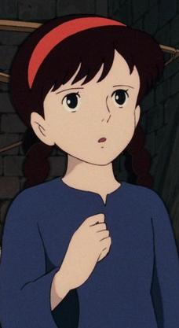
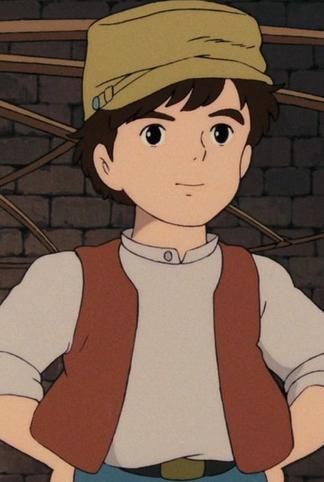
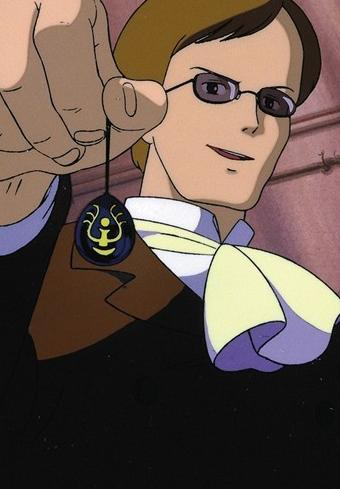
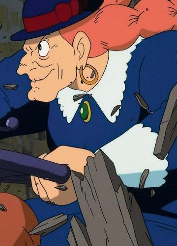

希达
配音 横泽启子
全名罗希达·多耶鲁·乌鲁·拉普达。希达是一位身世不明的少女。因为特务头领穆斯卡以调查拉普达为理由，而要求带她回总部协助调查，但在运送途中遇上空中海盗，双方因为争夺希达的飞行石而在飞船上发生枪战，希达为了逃避空中海盗及特务的追捕，因而从飞船上坠落地面，但幸好由于身上佩戴飞行石，所以平安降落地上，也因此被巴鲁发现。后来两人成为军方及空中海贼追捕的对象。最后她才得知自己原来是拉普达的王室正统后裔。希达心地善良，但也不乏女性独有的的坚毅和不屈精神。在天空之城即将落入恶人之手时，希达宁愿牺牲自己的生命也要保卫故国。

巴斯
配音 田中真弓
是一位住在有矿坑的小型城镇附近的少年，本作品的男主角，于矿山中担任实习的机械工人一职。父母双亡，父亲先前是飞行冒险家，在一次使用飞行船进行飞行冒险时，不慎被低气压卷入，但却成功突入到内部并意外发现到天空之城拉普达且成功拍摄到一幅照片，因而坚称天空之城拉普达确实存在，但当时众人对他的说法存疑，导致死前都一直被当成骗子。巴鲁个人深信父亲对于拉普达的所言不假并决心承继父亲的遗志，愿望是自己制造一架小型飞机来寻找传说中的天空之城拉普达，作品中有一幕有带到这一架已经完成一部分的航空器。本身个性直接且豪爽，因从事矿工的因素而身强体壮；且具有超出一般同年龄小孩的运动细胞，亦有着优秀的眼力。每天早上起床后的例行公事则为放出自家楼顶饲养的鸽子及吹奏小喇叭。在本作品的最后，和希达一同前往希达的北方故乡肯德亚山谷。

罗穆斯卡
配音 寺田农
斯卡·保罗·乌鲁·拉普达。拉普达的王室另一支后裔，同时也是政府的情报机关特务，军阶是大佐，很有野心且了解拉普达的秘密，手枪射击技术相当出色。保罗在希腊语有从属的意味，所以他的名字有可能有暗示著“拉普达的副王”。最后自己被巴鲁和希达以毁灭的咒语解开飞行石时所产生的强光弄瞎了双眼，堕海身亡。穆斯卡是一个道貌岸然的伪君子，外表对人谦和有礼，实际上心狠手辣，心中暗藏邪恶的野心。

朵拉
配音 初井言荣
空中海贼的首领，旺盛的行动力与年龄不太搭调。从海贼船上的肖像得知，她年轻时十分漂亮。朵拉是个面恶心善的老海盗，精通天文地理和密码破解，做事雷厉风行。
